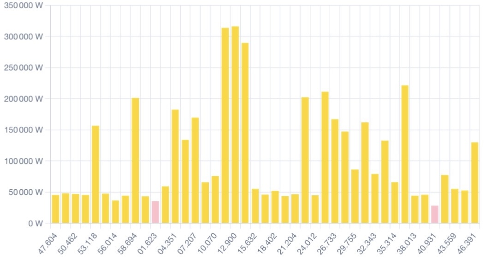
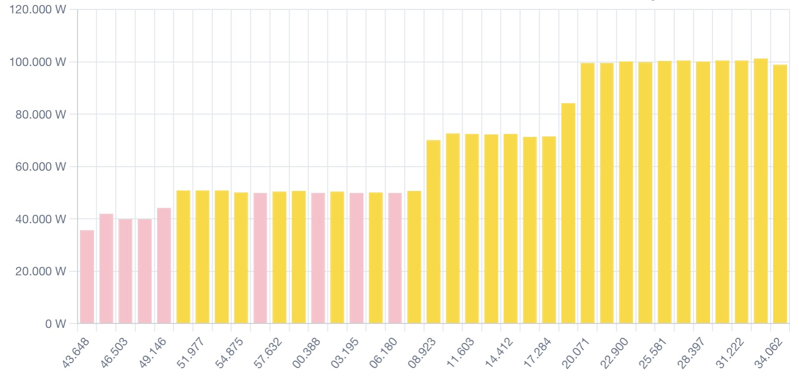

Peak Management in Industrial Contexts

A 60-seconds window showing the power meter of a factory employing cranes and welding equipment. The labels are in seconds.milliseconds. The bars show the power in kW and demonstrate Fast Peaks up to plus 250 kW over the base load of 50 Kw, appearing and disappearing within seconds.
Audience
This article is written for professionals in industrial organisations, who are responsible, formally or informally, for the purchase and usage of energy.
These responsibilities may lie with different roles in different organisations.
Emerging aspects of these responsbilities may challenge and even overwhelm some of those professionals.
This article is especially aimed at them.
Goal of this Article
Explain the different types of (electrical) peaks and peak management (shaving) solitions.
Sources
This article is loosely based on my magnum opus the handbook How to Ask and Answer Qquestions related to Renewable Energy.
The data and the charts from an actual factory.
To write both I have implemented a number of peak management (shaving) solutions in industrial context.
No Association
Neither endorsement, nor fitness for purpose.
All examples are for illustration purposes only.
Dictionary. Management vs Shaving
Peak Shaving is a colloquial name for Peak Management.
Peak Management
Peak management, also called shaving, is the activity of managing electrical peaks.
Reasons to Manage (Shave) Peaks
Electical peaks may cross limits set by the grid operator, limits of fuses/cricuit breakers, and due to one or a combination of those may additionaly hinder the operation of equipment, requiring prioritisation to be put in place.
Grid Limits
Grid operators may impose limits.
These limits are typically two kinds: kW peak and kWh over a period of time.
Peak Power Limit, kW Peak
Here again the chart from above. The factory has a kW peak limit of 1 750 kW.
The kW peak limit prohibits consumption above the limit even for a short time. Exceeding the kW peak limit may lead to circiuit breakers opening to protect the grid. The factory loses grid power. Additionally there could be penalties.
Energy Limit, kWh Over Period of Time
The energy limit for our factory is calculated the following way. The factory has an energy limit 398 kWh. The factory is not allowed to exceed 1/4 of it or 99,5 kWh during any 15 minutes period.
Grid Limits in Broader Context
The Grid Limits may be a bargaining chip in complex negotiations.
Our example factory can form an energy hub with a neigbouring factory in order to exchange excess electrical energy.
The grid operator is ready to allow that, but will then lower the limits of both companies. The lowered limits will fall under the minimum needs of the example factory to operate. This makes the hub possibility impossible to implement.
Fuses/Circuit Breakers
Fuses and circuit breakers are another reason to manage (shave) peaks.
In another example a site has large water heaters, which consme more energy, than the fuses/ciruit breaksers can handle.
Prioritisation
The limits on peaks may lead to the impossibility to operate equipment needed for the industrial processes.
The peak management (shaving) in this case might require re-design of the industria process.
Kinds of Peaks
In Industrial Context there are two major kinds of peaks.
Fast Peaks
The Fast Peaks are caused by equipment such a cranes and welding equipment.
A crane may have 4 x 5 kW electical motors to move and 2 x 50 kW electrical motors to lift, and can move and lift at the same time, therefore generating 120 kW at the push of a button.
Here we show the chart from above for a third time. Some of the fast peaks are caused by cranes.
Slow Peaks
The Slow Peaks are caused by enganging equipment which stays in operation for longer periods of time. Like in the example above, where large water heaters must operate for several hours.

A 60-seconds window showing the power meter of a factory. The labels are seconds.milliseconds. The bars show the power in kW and demonstrate the development of a slow peak from about 40 kW to about 100 kW over the period of about 30 seconds.
Peak Management (Shaving)
In this section we will see how management of peaks is done. The approach to management of peaks depends on the reasons and on the overall goals.
Strategies
Peak management requies a strategy.
The simples and most popular strategy is the curtailment of photovoltaic. When the sun shines and all photovoltaic sites in a given area produce, the grid operator may limit the delivery to the grid. Since electricity is not like water and one cannot simply turn the valve. One needs to instruct the inverters to produce less electricity.
Depending on the source of peaks and on the reasons to manage them, different strategies can be developed.
Implementations
The implementation of the strategy needs design of logic, an energy management software and a steering equipment.
Logic
The logic can be simple or complex.
Control Theory
An important fact about steering industrial equipment is that not infrequently has reaction time and reaction pattern.
Not infrequently, both must be taken into account.
For example, sening a steering command should be followed by a waiting time, which gives the system a chance to reach the desired state. Not doing that may lead to oversteering or bringing the system to a state beyond the desired state.
Upon receiving a steering command the system may or may not reach the desired state. This can happen for a number of reasons, one of which is that it might not have the ressources to do that or because it has a mind of its own and therefore follows additional rules.
All these factors are to be considered, when designing a peak management strategy.
An Indistrial Controller
In all cases the management of the peaks involves an industrial controller, which is capable of communicating with the equipment involved in the management of the peaks.
Energy Management Software
The controller runs energy management software, which implements the strategy by applying rules via steering commands sent to the equipment involved in the management of the peaks.
Prior to that, the controller conducts measurements, which are the basis of the decisions the controller takes and of the commands the controller sends.
Emergency Control
When one manages (shaves) peaks with the help of, for example, batteries, one needs emergency control over the load, which is causing the peaks.
The reason for this is that the batteries may discharge before the end of the peak interval, which might lead to damage caused by the unsupported peak.
To prevent such a damage the controller must be able to terminate the load causing equipment. This may be possible or impossibe, in which case the controller must be able to raise an alarm.
Termination of load causing equipemnt can be done with direct controlling, in cases when the equipment supports it. Or with a simple relay, which simply interrupts the power supply that equipment. A most brutal way, but effective in some cases
Managing vs Not Managing
Related to the Peak Limit vs Limit over Time.
Management of Fast Peaks. Kinetic Solutions
Teraloop.
Questions?
If you would have any questions, please feel free to contact the authors of this article.
Meet the Author
At SPS in Nürnberg in October.